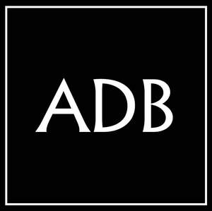
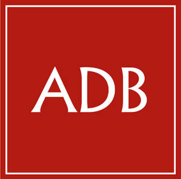
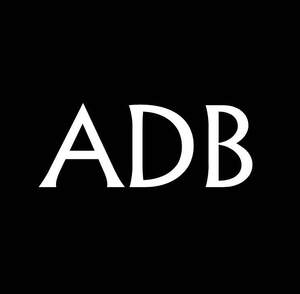

Trade Mark Journal No.2025/051 19 December 2025
UK00004306573 7 December 2025 (45)
Mark 1

Mark 2

Mark 3

Mark 4
- Class 45
- Legal conveyancing; Legal advice; Legal services; Legal research; Legal drafting; Legal advice and representation; Legal advocacy services; Patent licensing [legal services]; Legal investigation services; Provision of legal research; Certification of legal documents; Legal mediation services; Mediation [legal services]; Legal research services; Mediation in legal procedures; Legal consultation services; Registration services (legal); Licensing of intellectual property [legal services]; Legal services in the field of immigration; Personal legal affairs consultancy; Legal consultation in the field of taxation; Legal compliance auditing; Legal aid services; Provision of expert legal opinions; Legal services relating to copyright licensing; Legal consultancy services; Legal support services; Legal services relating to wills; Provision of legal information; Legal services provided in relation to lawsuits; Legal information services; Pro bono legal services; Monitoring intellectual property rights for legal advisory purposes; Legal and judicial research services in the field of intellectual property; Professional legal consultations relating to franchising; Legal consultancy relating to intellectual property rights; Legal services relating to business; Licensing of trademarks [legal services]; Legal advice relating to franchising; Licensing of software [legal services]; Software licensing [legal services]; Advisory services relating to consumers rights [legal advice]; Legal process serving; Trademark monitoring [legal services]; Attorney services [legal services]; Compilation of legal information; Expert consultancy relating to legal issues; Legal services relating to intellectual property rights; Legal document preparation services; Legal services relating to social insurance claims; Legal services relating to licences; Trademark watch services for legal advisory purposes; Licensing of patent applications [legal services]; Legal watching services; Licensing of intellectual property in the field of copyrights [legal services]; Cartoon character licensing [legal services]; Monitoring industrial property rights for legal advisory purposes; Legal services relating to the exploitation of copyright for printed matter; Preparation of legal reports; Licensing of registered designs [legal services]; Legal services for procedures relating to industrial property rights; Legal services relating to the exploitation of patents; Legal information research services; Legal research in the field of environmental protection; Legal assistance in the drawing up of contracts; Licensing [legal services] in the framework of software publishing; Licensing of intellectual property in the field of trademarks [legal services]; Legal services in the field of child protection; Legal services relating to the exploitation of intellectual property rights; Legal consultancy relating to patent mapping; Legal research relating to real estate transactions; Conveyancing services [legal services]; Legal services relating to the exploitation of broadcasting rights; Alternative dispute resolution services [legal services]; Legal services relating to the exploitation of copyright and industrial property rights; Bailiff services (legal services); Legal services relating to the management and exploitation of copyright and ancillary copyright; Preparation of legal reports in the field of human rights; Legal services relating to the acquisition of intellectual property; Legal services relating to the exploitation of transmission rights; Granting of software licenses [legal services]; Information services relating to legal matters; Legal services relating to the exploitation of film copyright; Legal services relating to the negotiation and drafting of contracts relating to intellectual property rights; Legal services relating to the registration of trademarks; Licensing of computer software [legal services]; Computer software (Licensing of -) [legal services]; Computer software licensing [legal services]; Granting of software licences [legal services]; Domain names (Registration of -) [legal services]; Registration of domain names [legal services]; Legal services relating to the management, control and granting of licence rights; Legal services in relation to the negotiation of contracts for others; Legal services relating to company formation and registration; Arranging for the provision of legal services; Legal services relating to time share rights; Providing information relating to legal affairs; Consultancy services relating to the legal aspects of franchising; Provision of information relating to legal services; Copyright (Professional advisory services relating to infringement of -); Copyright (Professional advisory services relating to licensing of -); Litigation advice; Professional advisory services relating to intellectual property rights; Litigation services [services of a lawyer]; Political advice; Legal advice in responding to calls for tenders; Copyright (Professional advisory services relating to -); Advisory services relating to the law; Advisory services relating to intellectual property licensing; Political consulting; Enforcement of intellectual property rights; Law enforcement; Political lobbying services; Political advisory services; Advisory services relating to intellectual property rights; Forensic advice for criminal investigations; Litigation services; Licensing of intellectual property rights.
Alexander de Berniere